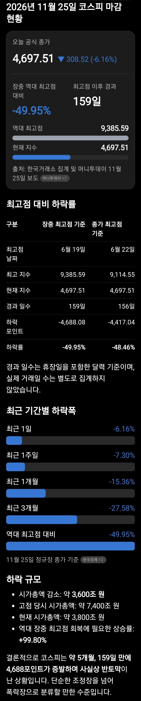

나스닥도 고점대비 20%넘게 빠짐

나스닥도 고점대비 20%넘게 빠짐
하방 시작이아니라 하방 중턱까지 이미옴
진행중인데 아직도 하방이 아니라고 믿는거임?
하방 아니라고 한적 없는데?ㅋㅋㅋ 중턱 진행 중ㅇㅈㄹㅋㅋㅋ 하방 시작인지 끝인지 니가 어캐 알고 말하냐? 숏 풀로 박고 하방 먹고 롱 먹어 아가리는 ㅋㅋ
오른만큼 내린다~ 저점 열심히 잡아봐 물타봐ㅋㅋ
븅신새기
주마다 적립식 매수 해서 그런거 신경 안 쓰는데? 오른만큼 내리면 숏 박아서 먹은거 인증 좀? 현실은 예수금 1억도 없는 새끼겠지만ㅋㅋㅋㅋ 오른만큼 내린다~ㅇㅈㄹ 아가리로 주식 하는 새끼ㅋㅋ
누가 숏으로 먹었대 븅신새기야~ㅋㅋ
수익실현하고 주택 부동산 매수했는데?
적립식 매수면 쭉해^^
니 계좌 실시간으로 쳐녹아서
오늘내일이라도 다시 반등이 왔으면 좋겠는건
알겠다만 어쩌니 니 계좌는 당분간 더 녹을텐데ㅋ
하락장이여서 하락장이라는데
뭔 토를 달긴달어 븅신새기야~
응 하락장 하루이틀 겪어보냐 맨날 계좌 보게? 이렇게 떨어졌어도 아직도 많이 수익 중인데?ㅋㅋ 하락 중턱 ㅇㅈㄹ이 웃겨서 말해준다 하락중턱 ㅇㅈㄹ 깔꺼면 숏 박아 ~ 수익실현해서 에베베 하지말고 주식 팔고 주택 부동산 매수 안 하고 숏 박았으면 더 먹었지ㅋㅋㅋㅋ
븅신새기가 적립식은ㅋㅋ
오르기만 하는 주식이 어딨나 좆도 못하니까
적립식 ㅇㅈㄹㅋㅋ
니논리면 시발 언젠가 하이닉스도 삼성도
다 결국엔 우상향이니 걱정 안해도되겠네
븅신 못하는걸 가지고 적립식 ㅇㅈㄹㅋㅋ
전문가들도 아직 다 안내려왔다는데
방구석 적립식 워렌버핏 쳐빙의해서
아닌데? 반등올건데? 결국엔 우상향이죠?
ㅇㅈㄹㅋㅋ
결국 다시오르면 시발 사람들이 왜 죽을라하냐ㅋㅋ
니논리대로면 백이면 백 다 부자되는건데
장애인련아ㅋ
코스피가 2천하던게 9천가다가 아직도 5천 언저리인데 시발ㅋㅋ 하락장 마감이라는거임?
전문가 ㅇㅈㄹㅋㅋㅋ 숏 박아서 부자 되라고 병신아 누가 하락장 아니라고 함?ㅋㅋ 더 하락인거 알면 숏 쳐박아서 돈 쉽게 벌라니까 왜케 흥분해ㅋㅋㅋㅋ
주담대 갚느라 주식할돈 없어서 다행이야~

코스피 증발이아니라 너네 개미돈 뽑아서 기관 외인 꿀꺽
코스피는 그래도 몇년전에비해 오른거긴 하지만
코스닥 이색기는 오른것도 없으면서??..
그러니까 저 돈을 우리나라 개미들이 모아줘서 외국애들이 들고 갔다는 거지?
제작년 12월에 2300이었다는 거만 기억하면 사실 거품 꺼졌다손 쳐도... 10% 하락할때는 팔고 오르면 사라던 주식전문가 님 정말 감사합니다. 덕분에 33만에 다 손절하고 지금도 돈 벌고 있어요. 정말 감사합니다.
한글 못 읽어? 병신임?